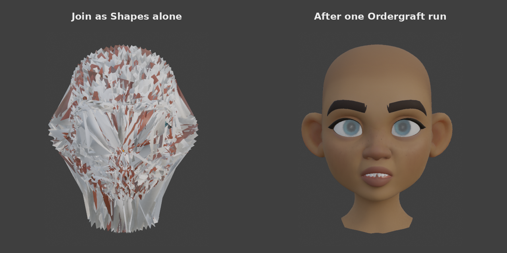
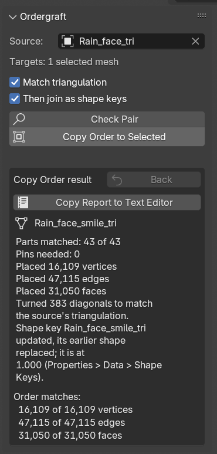
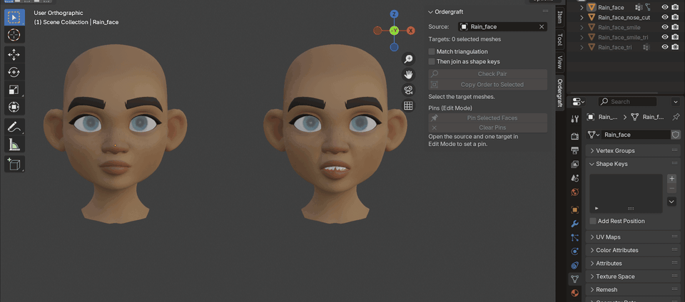
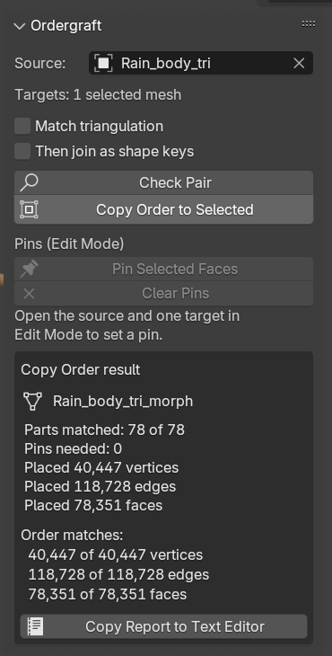

Ordergraft for Blender
A shape key that tears the face because the copy came back in another vertex order? Ordergraft copies the vertex, edge and face order to it, loose parts included.
$8 once, source included. Buy for $8
![Blender 4.2.23: Rain's all-triangle face with a smile shape key at full strength, made by Join as Shapes from a copy in another order: the face is torn into shards, and the Ordergraft panel beside it has no result yet. The key slider goes to zero and back. Then the other copy is selected, Match triangulation and Then join as shape keys are ticked, Copy Order to Selected is pressed, and the result box fills in: Parts matched: 43 of 43, Pins needed: 0, Turned 383 diagonals. The key now plays on the face without tearing.](img/rain-hero-phone.gif)
- Loose parts in one runEyes, teeth, tongue and lashes, no faces to pick. A part it can't tell apart is listed; two faces settle it.
- Triangulated copies tooAll-triangle meshes work, even triangulated after different poses, up to about 1.2 average edge lengths of movement; for bigger morphs, sculpt on the triangulated mesh (large parts: see below).
- Check first, one undoCheck Pair changes nothing in your file. One Ctrl+Z undoes a copy.
$8 once, source included. Every update included.
Buy for $8Studio licence for up to 10 seats, $30: email us for the link.
Blender 4.2 LTS to 5.3, tested on 4.2.23, 4.5.16, 5.2.4 and 5.3.0 (Linux) · source code included · support@ochrestack.com · Polar checkout · refund within 14 days if we can't fix a fault · no license check · details
Watch
What the film shows
Captions only, 1080p at 60 frames a second (720p on phones). Rain's face in Blender 4.2.23 with Ordergraft 1.0.5: a smile key torn by Join as Shapes; Check Pair; one Copy Order on the all-triangle copy, 43 of 43 parts; the key playing clean; then the quad copy, with the one part it lists; and a copy whose topology differs, where Check Pair says where the copies stop matching and changes nothing. The waits while Blender works are cut (how). Character: credits.
In Blender, for real
Rain's face: 43 loose parts, 16,109 vertices (how).



Data > Shape Keys); Order matches: 16,109 of 16,109 vertices, 47,115 of 47,115 edges, 31,050 of 31,050 faces." width="370" height="795" loading="lazy">

Two faces settle a listed part: step by step (45 s)
![Blender 4.2.23, Rain's face twice side by side, the copy with her left cornea, a round part, turned about its own axis. Copy Order lists it (Parts matched: 41 of 43, Pins needed: 2). Target selects the part in Edit Mode and the view moves to her eye; two neighbouring faces are picked. Source does the same on the other face; the matching two faces are picked. Pin Selected Faces, then Copy Order again: Parts matched: 42 of 43, Pins needed: 1, Placed by your pin: Part 8 on the target (672 faces, Part 8 on the source).](img/rain-pin.gif)
What it does
Copy Order to Selected: shape keys, UV maps, vertex groups, materials and seams travel with their elements; so do vertex-parented objects and Hook modifiers. Then join as shape keys adds each target as a shape key.
Details
- Checkout by Polar; the download arrives by email. To update, download the new zip where you bought Ordergraft and install it the same way. If it doesn't work as described and we can't fix it, email us within 14 days for a full refund (terms).
- $8 for one seat; a Studio licence for up to 10 seats is $30 (email us for the link).
- Windows and macOS have not been tested. GPL-3.0-or-later; no telemetry, no network calls, no license check.
Not covered
- Meshes whose topology really differs (a vertex added or merged, a new retopology) are reported, not changed; there is no matching by UVs or by vertex position alone.
- Identical parts that moved a lot, and a round part turned about its own axis, are listed, not guessed; so can a round part that changed shape (a sphere-based head, a disc eye).
- Triangulated copies posed so differently that a vertex moved farther than about 1.2 average edge lengths, or one part of more than 3,000 vertices whose diagonals differ in many places, are reported ("The triangles could not be followed"), not changed: triangulate both the same way, or after posing.
- A target more than twice or less than half the size of the source (a centimetre export beside a metre mesh) is matched, but not joined as a shape key until its size matches; the result says what to do.
- Hair, particle systems and Surface Deform bindings on the target are named after the copy, not re-pointed.
- A large mesh blocks Blender while it runs: no progress bar, and Esc does not cancel.
A game body, all triangles

The same sculpt triangulated again by another tool is reported, not followed ("The triangles could not be followed"): one part has 20,462 faces and many of its diagonals differ. Triangulate both copies the same way first.
Install and first copy: quick start.
Words used on this page: loose part, topology, shape key
- Loose part: a piece of a mesh that is not connected to the rest, such as an eye or a tooth.
- Same topology: the same vertices joined the same way. Their positions and their order may differ.
- Shape key: Blender's name for a blendshape or morph target.
How we tested
- All triangles: 43 of 43 parts; the key's largest vertex error 0.255 m before, 0 m after.
- Quads (15,594 faces): 42 of 43 parts, 1 pin needed.
Tests and timings
266 tests passed and 1 was skipped on each of the four versions; 51 of 51 real-window steps pass on each. All on Linux. Copy Order took 1.3 s (quads) and 4.3 s (all triangles, Match triangulation) on an Intel Xeon at 2.10 GHz with 4 cores, Blender 4.2.23, Ordergraft 1.0.5.
Real Blender windows, real clicks; the slider moves are stepped by script. How these were made.
Character: Rain Rig (CC) Blender Foundation | studio.blender.org, used under CC BY 4.0. Rain is not included with Ordergraft.
$8 once, source included.
Buy for $8